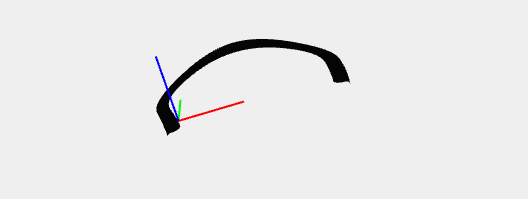
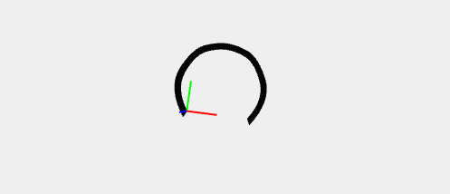
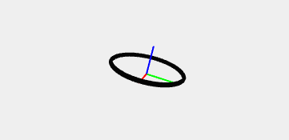
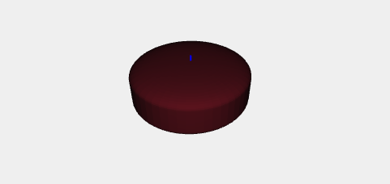
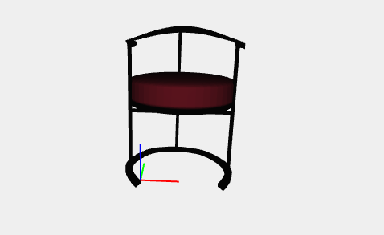
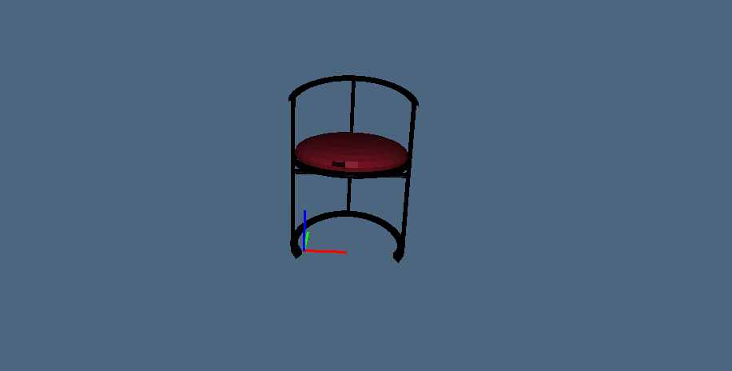

Catilina chair by Luigi Caccia Dominioni

Catilina chair has four main components: the headrest, the base, the pillow and the support under it. The first component was probably the hardest to realize because of its complexity. The complexity is given by the distance between the two NUBS; infact to give the model a sort of reality the distance has to remain almost the same in all its parts, but the lots of concavity do not make it easy to realize.var pointsup11 = [[-0.2,0,-0.15],[0,0,-0.15],[0,0,0],[-0.3,0.5,0],[0.6,0.8,0.3],[1.5,0.8,0.3],[2.3,0.5,0],[2,0,0],[2,0,-0.15],[2.2,0,-0.15]] var knotsup11 = generateKnot(pointsup11) var nubsup11 = NUBS(S0)(2)(knotsup11)(pointsup11); var curvesup11 = MAP(nubsup11)(domain); var pointsup12 = [[-0.2,0,-0.2],[-0.2,0,0],[-0.5,0.5,0],[0.6,0.8,0.5],[1.5,0.8,0.5],[2.5,0.5,0],[2.2,0,0],[2.2,0,-0.2]] var knotsup12 = generateKnot(pointsup12) var nubsup12 = NUBS(S0)(2)(knotsup12)(pointsup12); var curvesup12 = MAP(nubsup12)(domain); var surSup = BEZIER(S1)([nubsup11,nubsup12]) var surfaceSup = S([0,1])([1.15,2.65])(COLOR([0,0,0])(MAP(surSup)(dom2d)))

The base was difficult to realize because of its precise corners and so I had to make a lot of NUBS to realize it. Finally it was easy to use BEZIER, choosing between the realized NUBS.var points11= [[0,0,0],[-0.5,0.7,0],[0,1.9,0],[0.7,2.2,0],[1.3,2.2,0],[2,1.9,0],[2.5,0.7,0],[2,0,0]] var knots11 = generateKnot(points11) var nubs11 = NUBS(S0)(2)(knots11)(points11); var curve11 = MAP(nubs11)(domain); var points12= [[-0.1,-0.2,0],[-0.75,0.7,0],[-0.1,2.1,0],[0.7,2.4,0],[1.3,2.4,0],[2.1,2.1,0],[2.75,0.7,0],[2.1,-0.2,0]] var knots12 = generateKnot(points12) var nubs12 = NUBS(S0)(2)(knots12)(points12); var curve12 = MAP(nubs12)(domain); var points13= [[0,0,-0.1],[-0.5,0.7,-0.1],[0,1.9,-0.1],[0.7,2.2,-0.1],[1.3,2.2,-0.1],[2,1.9,-0.1],[2.5,0.7,-0.1],[2,0,-0.1]] var knots13 = generateKnot(points13) var nubs13 = NUBS(S0)(2)(knots13)(points13); var curve13 = MAP(nubs13)(domain); var points14= [[-0.1,-0.2,-0.1],[-0.75,0.7,-0.1],[-0.1,2.1,-0.1],[0.7,2.4,-0.1],[1.3,2.4,-0.1],[2.1,2.1,-0.1],[2.75,0.7,-0.1],[2.1,-0.2,-0.1]] var knots14 = generateKnot(points14) var nubs14 = NUBS(S0)(2)(knots14)(points14); var curve14 = MAP(nubs14)(domain); var points15= [[0,0,0],[-0.1,-0.2,0]] var knots15= generateKnot(points15) var nubs15 = NUBS(S0)(2)(knots15)(points15); var curve15 = MAP(nubs15)(domain); var points16= [[0,0,-0.1],[0,0,-0.1],[-0.1,-0.2,-0.1]] var knots16= generateKnot(points16) var nubs16 = NUBS(S0)(2)(knots16)(points16); var curve16 = MAP(nubs16)(domain); var points17= [[2,0,-0.1],[2,0,-0.1],[2.1,-0.2,-0.1]] var knots17= generateKnot(points17) var nubs17 = NUBS(S0)(2)(knots17)(points17); var curve17 = MAP(nubs17)(domain); var points18= [[2,0,0],[2,0,0],[2.1,-0.2,0]] var knots18= generateKnot(points18) var nubs18 = NUBS(S0)(2)(knots18)(points18); var curve18 = MAP(nubs18)(domain); var sur12 = BEZIER(S1)([nubs11,nubs12]) var surface12 = MAP(sur12)(dom2d) var sur34 = BEZIER(S1)([nubs13,nubs14]) var surface34 = MAP(sur34)(dom2d) var sur13 = BEZIER(S1)([nubs11,nubs13]) var surface13 = MAP(sur13)(dom2d) var sur24 = BEZIER(S1)([nubs12,nubs14]) var surface24 = MAP(sur24)(dom2d) var sur78 = BEZIER(S1)([nubs17,nubs18]) var surface78 = MAP(sur78)(dom2d) var sur56 = BEZIER(S1)([nubs15,nubs16]) var surface56 = MAP(sur56)(dom2d) var base =COLOR([0,0,0])(STRUCT([surface12,surface13,surface34,surface24,surface78,surface56]))

This component it's a simple thorus realized with BEZIER (at this time the selector passed is S0 instead of S1) and ROTATIONAL_SUFACE plasm functions.var profile1 = BEZIER(S0)([[2.2,0,1],[2.35,0,1],[2.5,0,0.75],[2.35,0,0.5],[2.2,0,0.5]]); var mapping1 = ROTATIONAL_SURFACE(profile1) var toro = S([0,1,2])([0.6,0.55,0.3])(COLOR([0,0,0])(MAP(mapping1)(domainRot)))
 The last component is the comfortable red pillow realized with NUBS and ROTATIONAL_SURFACE. I used NUBS instead of BEZIER because of the precise roundness of the model and this solution has given good results
var puntiCuscino = [[0,0,0.9],[1,0,0.9],[1,0,0.5],[1,0,0.1],[0,0,0.1]] var knotsCuscino = generateKnot(puntiCuscino); var nubsCuscino = NUBS(S0)(2)(knotsCuscino)(puntiCuscino) var surCuscino = ROTATIONAL_SURFACE(nubsCuscino) var cuscino= COLOR(rgb01(106,18,30))(MAP(surCuscino)(domainRot))
Catilina chair original model
Results obtained in Javascript and Pyplasm
 